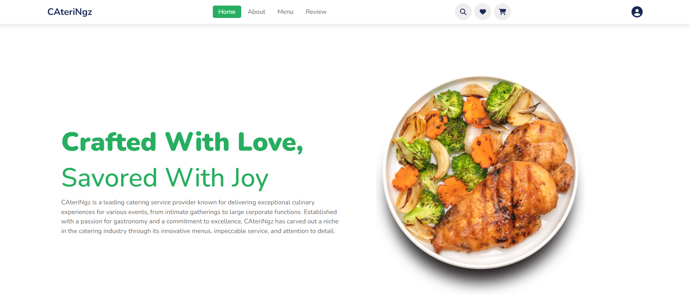
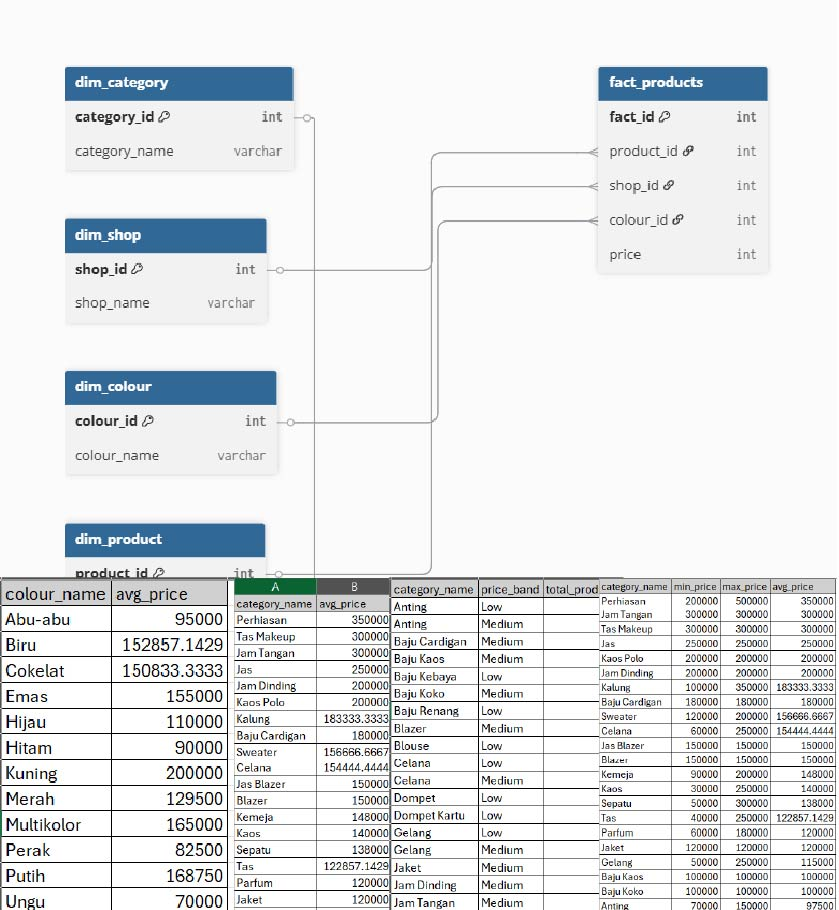

Jordi Austin Iskandar
Computer Science Student | Database Engineering & System Development Enthusiast
About Me
Enthusiastic Computer Science student with a strong interest in database engineering, data analysis, data analytics, and system development. Possesses a solid foundation in JavaScript, Python, and SQL, with growing expertise in leveraging data for insights and decision-making. Eager to deepen knowledge in building scalable, data-driven systems and analytical solutions. Quick to learn new technologies, adaptable in collaborative environments, and motivated to contribute to innovative software, database, and data analysis projects.
Skills
Soft Skills: Project Management, Teamwork, Time Management, Communication Skills
Programming: C, R, Python, Javascript
Data Tools: MySQL, Apache, Tableau, Power BI
Languages: English, Bahasa Indonesia, Japanese
Education
Bachelor of Computer Science
Bina Nusantara University (Aug 2023 - Present)
Specialization in Database Technology.
Current GPA: 3.61 / 4.00.
Work Experience
Project Manager Assistant
PT. Teknologi Hewan Bahagia | Mar 2025 - Present
- Assisted in creating and updating project timelines.
- Organized project documentation and regular reports.
- Scheduled and recorded minutes of team meetings.
- Coordinated with cross-functional team members.
Part-time Administration
Koral Property | Mar 2021 - Mar 2025
- Prepared and issued accurate invoices for company transactions, ensuring timely and error-free billing.
- Organized and maintained transaction-related paperwork to support seamless operational processes.
- Ensured all documentation adhered to company standards and compliance requirements.
Graphic Designer
GBI Intro Exoucia | Jun 2021 - Sep 2024
- Designed creative and visually engaging flyers to promote Sunday services and church events.
- Developed compelling Instagram posts to enhance the church's social media presence and outreach.
Projects
MajorMatch
A smart platform to help students explore and choose academic and career paths using personalized tools. This was a Human and Computer Interaction group project in 2024.
CateriNgz
A catering service platform offering curated lunchbox meals and options for various occasions. This was an individual project for Human and Computer Interaction in 2024.

Smart Humidifier
An intelligent device that automatically regulates room humidity using a fuzzy logic control system and real-time data. This was an Artificial Intelligence group project in 2024.

PetNexus.id
A simple landing page announcing the upcoming launch of the Pet Nexus mobile app, which is a comprehensive digital platform for pet owners. Project from 2025.
Predictive Flood Model
Flood Prediction in Jakarta Built a machine learning model using climate data to predict flood events.

NYC Uber Pickups: Data Engineering
This project demonstrates a complete Data Engineering + Data Analysis workflow, taking raw Uber pickups data and transforming it into a fully visualized dashboard hosted on Tableau Public.
Fashion Ecommerce Analytics
End-to-end data engineering and SQL analytics project using an Indonesian e-commerce dataset sourced from Kaggle. Developed a Python ETL pipeline in VS Code, and performed analytical SQL queries to generate insights.
Certifications & Licenses